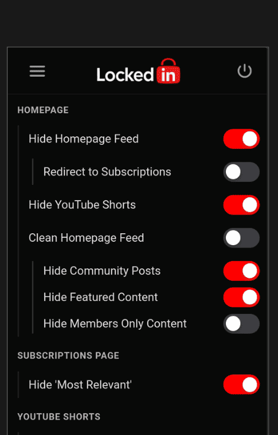

LockedIn is an open-source browser extension that helps you regain control of your YouTube experience. With one-click toggles, you can hide distractions like Shorts, recommendations, comments, and thumbnails for a more focused browsing experience. It runs entirely locally, collects no data, and keeps your privacy protected while helping you stay intentional and distraction-free on YouTube.
Remove the endless feed of recommended videos for a cleaner, distraction-free Homepage
Stop endless scrolling by hiding Shorts everywhere on YouTube
You can Hide or Blur thumbnails for a distraction-free experience
Focus on content without distractions from comment sections and live chats
Intelligently manage video sidebar content - hide recommendations, playlists for a better focused environment
Fine-tune your YouTube experience with granular control over every distraction
